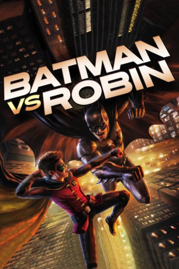

#11913 Batman vs. Robin
 
 IMDB-Wertung: 7.1 / 10
IMDB-Wertung: 7.1 / 10  Tomatometer: 100
Tomatometer: 100  Metascore: 0
Metascore: 0 
Lose auf dem Comic "Der Rat der Eulen" basierender Batman-Animationsfilm, in dem Batman entdeckt, dass eine Geheimgruppierung names "Rat der Eulen" in Wirklichkeit seit Jahrzehnten die Geschicke seiner Heimatstadt Gotham lenkt.
Jahr: 2015
Dauer: 80 Minuten
FSK:
Land: USA Studio: Warner Home VideoTonspuren: DD5.1 - ,
Untertitel: Deutsch,
Auflösung: 720p (1280x720) Größe: 2314 MB
Genre: Action, Thriller, Drama, Abenteuer, Krimi, Animation/Trick
Regisseur: Jay Oliva
Drehbuch: Bob Kane, J.M. DeMatteis, Scott Snyder, Greg Capullo, Jonathan Glapion
Soundtrack: Frederik Wiedmann
Darsteller:
Datei: X:\Comic-Trick\Batman\Batman vs. Robin (2015, FSK, 1280x720).mkv seit 10.10.2019
Festplatte: Comicverfilmungen+MusikCD
 Es gibt insgesamt 19 Filme in der Gruppe 'Comic-Trick\Batman'
Es gibt insgesamt 19 Filme in der Gruppe 'Comic-Trick\Batman'